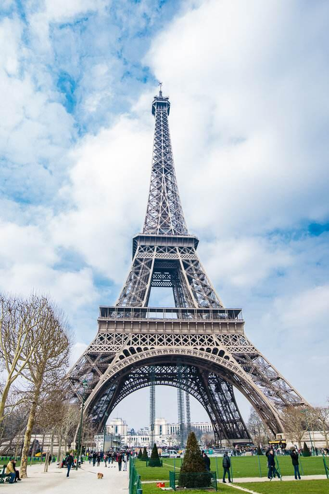
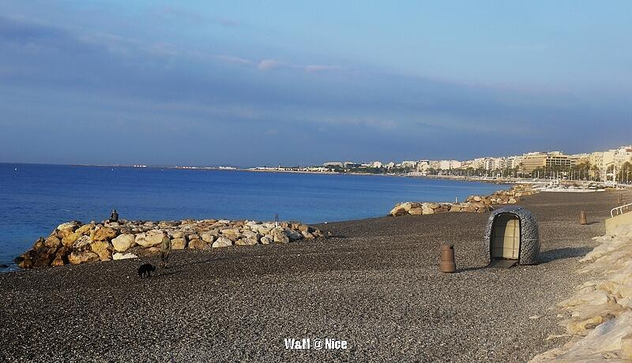

Pairs

巴黎是法国的首都，也是这个国家的心脏。法国的公路里程从巴黎圣母院开始，一块小小的石碑标志着这个国家的中心。 法国人有两种，一种是“巴黎人”，另一种是“住在巴黎以外的人”。 今天的巴黎人依然走在十九世纪的碎石路上，在这条大道的沿线，点缀着这些名字：协和广场、凯旋门、卢浮宫、巴黎圣母院……在这条大道上走过的是雨果、波德莱尔、居里夫人、毕加索、乔伊斯…… 大多数游客心中向往的，是一个古老而浪漫的巴黎，一个极具历史感的巴黎。这里的名胜古迹已足以让人流连忘返，而另一个充满前卫与波西米亚气息的巴黎同样让人心驰神往。
Nice

尼斯（Nice）是地中海沿岸法国南部城市，地处法国马赛和意大利热那亚之间，为滨海阿尔卑斯省首府，是法国仅次于巴黎的第二大旅游胜地，全欧洲最具魅力的黄金海岸。尼斯也是欧洲主要旅游中心之一和蔚蓝海岸地区的首选度假地。 尼斯有丰富的文化遗产，如博物馆、罗马遗迹，以及世界一流的歌剧院，同时将普罗旺斯风格融合在大街小巷。漫步在尼斯，恍若花团锦簇的童话世界。 尼斯被人称为：“世界富豪聚集的中心。”海边豪华别墅、比比皆是的昂贵商店和艺术气息的交织使尼斯形成富丽堂皇与典雅优美的独特美。
Provence
普罗旺斯（Provence）位于法国东南部，毗邻地中海和意大利，从地中海沿岸延伸到内陆的丘陵地区，中间有大河“Rhone”流过。自古就以靓丽的阳光和蔚蓝的天空，迷人的地中海和心醉的薰衣草，令世人惊艳。 从古希腊、古罗马时代起就吸引着无数游人，至今依然是旅游胜地。 普罗旺斯从诞生之日起，就谨慎地保守着她的秘密，直到英国人彼得·梅尔的到来，普罗旺斯许久以来独特生活风格的面纱才渐渐揭开。 在梅尔的笔下“普罗旺斯”已不再是一个单纯的地域名称，更代表了一种简单无忧、轻松慵懒的生活方式，一种宠辱不惊，看庭前花开花落；去留无意，望天上云卷云舒的闲适意境。如果旅行是为了摆脱生活的桎梏，普罗旺斯会让你忘掉一切。